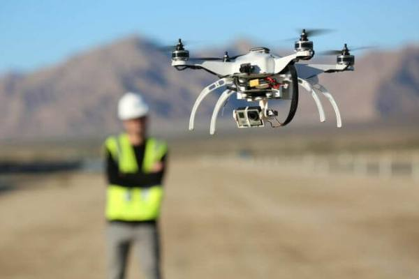

Компьютерный лингвистразрабатывает алгоритмы распознавания звучащей и письменной речи, QA-систем, систем машинного перевода, создает инструменты для разработки чат-ботов, голосовых ассистентов и т. д. Компьютерная лингвистика – это наука с множеством прикладных направлений. Самое крупное связано с обработкой больших данных – Big Data. В Интернете есть терабайты текстов в новостных лентах, соцсетях. Из них надо буквально выуживать определенную информацию, например, отслеживать тематические инфоповоды, чтобы предлагать в рекомендациях публикации, соответствующие вкусам пользователя.
Требования к работнику:
- уметь писать коды на разных языках программирования, в первую очередь спрашивают про Python, C+ и С++, Java. Потребуется минимальный опыт в 3 года в этой сфере;
- работать с разными операционными системами;
- разработка VR/AR-игр и виртуальных туров;
- написание кода на C#;
- программирование анимации, физики частиц;
- умение писать нативные приложения для iOS и Android;
- обладать опытом серверного программирования.
Плюсы и минусы работы
Плюсы:
- профессия новая, поэтому кадровый рынок пока испытывает дефицит компьютерных лингвистов;
- компьютерные лингвисты разбираются в двух совершенно разных областях – ИТ и прикладном языкознании. При желании они могут сменить сферу деятельности: уйти в программирование или перевод, цифровую журналистику, маркетинг;
- работа хорошо оплачивается.
Минусы:
- компьютерная лингвистика – непростая прикладная наука, для работы нужна длительная подготовка;
- немногие могут быть сразу и гуманитариями до мозга костей, и продвинутыми программистами. Работа компьютерного лингвиста предполагает именно такой трудно достижимый симбиоз;
- деятельность связана с работой за компьютером, поэтому лингвисты подвержены риску ряда профессиональных заболеваний: проблемы со зрением, опорно-двигательным аппаратом.
Зарплата: 70000 – 100000 рублей
Нанобиотехнолог
Специалист работает на стыке нано- и биотехнологий. Его задача – найти решение, какие образом можно интегрировать искусственные интерфейсы и материалы в живые организмы. Нанотехнолог помогает вывести медицину на абсолютно новый уровень. Нанотехнологические устройства и материалы позволяют излечить заболевания, которые ранее считались неизлечимыми. Они создают новые лекарственные материалы, методы диагностики и профилактики вирусов, работают над методиками продления жизни.
Требования к работнику:
- умение владеть лабораторным оборудованием;
- умение культивировать микроорганизмов;
- умение проводить микробиологических замеров оборудования и продукции;
- знание функций генов и создание ДНК-маркеров.
Плюсы и минусы работы
Плюсы:
- обычно карьера начинается с должности лаборанта, однако возможен карьерный рост до руководящего поста;
- специалисты, владеющие иностранным языком, могут получить приглашение работы от зарубежных компаний;
- возможность работать в качестве практикующего нанобиотехнолога или заниматься преподавательской деятельностью.
Минусы:
- значительный карьерный рост возможен не везде, всё зависит от места трудоустройства;
- специфика работы обуславливает её малоподвижность;
- определённые направления специальности налагают на сотрудника большую ответственность.
Зарплата: 50000 – 80000 рублей
Оператор беспилотных устройств

Дроны и беспилотные аппараты сегодня используются в разных сферах жизни. Международная организация AeroNet отмечает, что уже к началу 2025 года мировой рынок беспилотников будет оцениваться в 200 миллиардов долларов. Уже сегодня дроны применяют для разведки мест полезных ископаемых, сельском хозяйстве, организации безопасности, для обслуживания трубопроводов.
Требования к работнику:
- умение использовать современных систем навигации и управления;
- знание автоматизированного проектирование;
- знание прикладной гидро- и аэродинамика;
- знание техники безопасности при эксплуатации дрона.
Плюсы и минусы работы
Плюсы:
- редкая профессия, поэтому операторы очень востребованы;
- работа с современной техникой и программами;
- постоянное обучение и саморазвитие;
- возможность получить новую специализацию для авиаторов любого возраста.
Минусы:
- оператор несет огромную ответственность;
- халатность приведет к материальным потерям и человеческим жертвам;
- работа сидячая, активным людям она может показаться монотонной.
Зарплата: 50000 - 100000 рублей
Специалист по анализу больших данных (Big Data Analyst)
Другое название этой профессии – дата-сайентист. Этот специалист выполняет анализ огромных массивов информации, причем данные в них не структурированные. Дата-сайентист как раз структурирует и классифицирует их, выявляет очевидные и неочевидные связи между данными. Результаты анализа используются при создании новой продукции, веществ, технологий и в других сферах деятельности. Также структурированные массивы информации применяются в машинном обучении и создании искусственного интеллекта. Нужно знать основы программирования, не лишним будет высшее образование в сфере математических наук.
Требования к работнику:
- умение интерпретировать данные, анализировать результаты с помощью статистических методов;
- умение применять математическую или статистическую теорию и методы для сбора, систематизации, интерпретации и обобщения числовых данных;
- умение применять интеллектуальный анализ данных, их моделирование, обработку естественного языка и машинное обучение для извлечения и анализа информации из больших структурированных и неструктурированных наборов данных.
Плюсы и минусы работы
Плюсы:
- профессия новая и стремительно набирает популярность;
- возможен профессиональный рост и смена профиля деятельности;
- большое количество клиентов заинтересовано в услугах Big Data Analyst.
Минусы:
- работа малоподвижная и однообразная;
- часто ненормированый рабочий день;
- постоянное психологическое напряжение.
Зарплата: 70000-20000 рублей
Логист
Это одна из самых востребованных профессий в Украине и в Европе сегодня, и по прогнозам она не утратит своих позиций и в ближайшие лет 10-20. И наоборот, спрос на хороших специалистов в сфере логистики будет только расти. Задача логиста – организовывать транспортировку товаров от производителя к покупателю. Причем это могут быть как внутренние продажи, так экспорт. Логист должен найти способ, как организовать доставку из пункта А в пункт Б с минимальными затратами, чтобы не увеличивать себестоимость продукции.
Требования к работнику:
- быть уверенным переговорщиком;
- умение видеть весь процесс движения товаров или услуг целиком;
- знание закупочной, складской логистики;
- знание современных технологий, необходимых программных средств, например, SAP, Axapta;
- опыт взаимодействия с поставщиками;
- владение английским или несколькими языками
Плюсы и минусы работы
Плюсы:
- общение и различные выезды на склады;
- высокая заработная плата;
- приобретенные вами навыки помогут с легкостью находить решения к любым задачам.
Минусы:
- нельзя допускать каких-либо ошибок;
- высокая утомляемость.
Зарплата: 40000—200000 рублей
Эколог
Экологи пытаются понять и объяснить, например, почему высыхают озера или гибнут обитатели леса. Они изучают состояние земли, воды, воздуха, а также степень воздействия промышленных производств на людей, растения, животных. Экологи выявляют степень загрязненности, анализируют причины и составляют прогноз ситуации в будущем.
Требования к работнику:
- свободно разбираться в экологическом законодательстве, стандартах и нормативах;
- знать физику, химию, биологию, процессы проходящие в окружающей среде;
- иметь представление о порядке проведения экологической экспертизы;
- иметь навыки компьютерного моделирования;
- разбираться в зарубежном и отечественном опыте в сфере охраны окружающей среды;
- владеть иностранным языком (для возможности командировок или работы за границей).
Плюсы и минусы работы
Плюсы:
- спрос на квалифицированных экологов будет расти;
- международная специальность, что дает возможность работать за рубежом (причем за границей профессия эколога пользуется большим спросом, чем в России);
- работа эколога интересна и подразумевает командировки (это плюс только для тех, кто не любит подолгу засиживаться на одном месте).
Минусы:
- в целом невысокие зарплаты экологов (за исключением специалистов, работающих в нефтегазовой промышленности или строительной индустрии);
- часто приходится работать в экстремальных условиях;
- чопасность для здоровья из-за необходимости работы с вредными веществами (при соблюдении техники безопасности риск отрицательного влияния вредных факторов сводится к нулю).
Зарплата: 50000—150000 рублей
Специолист по кибербезопасности
Прогресс в цифровой среде обеспечил специалистов по кибербезопасности работой на много лет вперед. Но с усложнением автоматизированных процессов и систем меняются и требования к кандидатам. Трудоустройство невозможно без высшего технического образования и опыта. Для работы в крупных частных и государственных корпорациях могут потребоваться специальные сертификаты в области IT-безопасности: CISM, CISSP и др.
Требования к работнику:
- высшее техническое образование;
- знание новейших технических средств обеспечения кибербезопасности;
- знание технологии создания автоматизированных систем и программирования;
- опыт работы в области информационной безопасности от 1 года;
- понимание рабочих процессов компании;
- знание законодательства и обязательных стандартов обеспечения информационной безопасности и способов их соблюдения.
Плюсы и минусы работы
Плюсы:
- Востребованность;
- Высокий уровень заработной платы;
- Перспективы карьерного роста.
Минусы:
- Огромная ответственность;
- Работа требует полной самоотдачи;
- Сидячая работа в помещении.
Зарплата: 60000—240000 рублей
Тестировщик-автоматизатор

Пока в мире будет запрос на качественное ПО, будут востребованы и тестировщики. Эксперты прогнозируют, что в ближайшие десять лет спрос на QA-специалистов вырастет на 25%. Однако, если пару лет назад было достаточно уметь проверять продукты вручную, сегодня работодатели отдают предпочтение тестировщикам, которые умеют или учатся программировать автотесты.
Требования к работнику:
- разбираться в техниках тест-дизайна;
- понимать жизненный цикл ПО;
- базово представлять, что такое веб-разработка;
- нужно знать фреймворк PyTest, инструменты Selenium для тестирования веб-приложений, которые подходят и для Java;
- для работы с базами данных еще пригодится язык SQL;
- знать хотя бы один из самых распространенных среди тестировщиков язык — Java или Python — для разработки автотестов.
Плюсы и минусы работы
Плюсы:
- У тестировщика большие карьерные возможности;
- Стать тестировщиком можно даже без технического бэкграунда, при должных усидчивости и внимательности;
- Можно работать удаленно.
Минусы:
- На стартовых позициях много однотипных задач. Чтобы не остаться в этом навсегда, можно предлагать какие-то новые идеи команде, чтобы вам доверили что-то поинтереснее.
Зарплата: 60000—240000 рублей